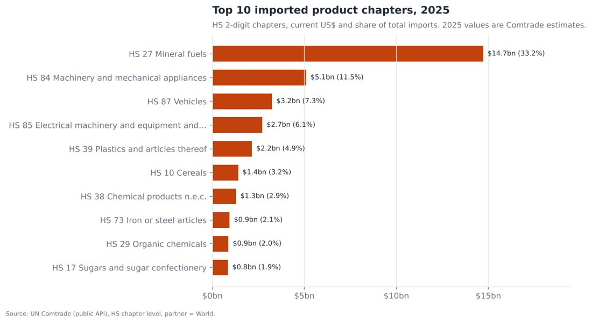

Nigeria Import Trends & Economic Dependence 2010–2025
What does Nigeria import, from whom, and how does the naira affect it? An end-to-end pipeline on UN Comtrade and World Bank data.
- Mineral fuels rose from 1.4% to 33.2% of imports; China supplied 29.4% in 2025.
- The naira fell from ₦150 to ₦1,518 per US$, with no statistically significant link to import growth.
- SQL database, 12 charts, 5-page dashboard, Power BI exports, 39 tests.